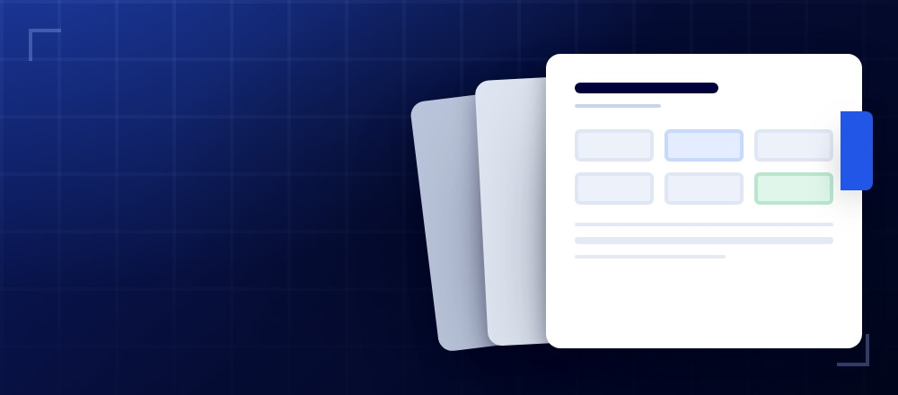

FLIGHT DECK
Universal Template
Watch
▶
GE Aerospace · FLIGHT DECK
FLIGHT DECK Universal Template
Open the live page
→
Replay
❚❚
↻
⋯
Back to the cover
Open the live page ↗
FLIGHT DECK Universal Template
Open the live page
→